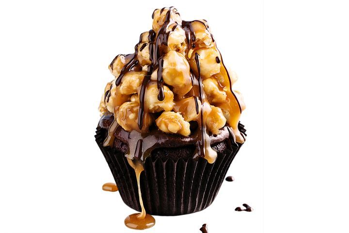

Salted caramel popcorn

Description
This is the ultimate indulgence - caramel popcorn mud cakes with more caramel on top.
Ingredients
- 150g dark cooking chocolate, finely chopped
- 100g butter, chopped
- 125ml (1/2 cup) hot water
- 215g (1 cup) caster sugar
- 1 tsp vanilla extract
- 100g (2/3 cup) plain flour
- 40g (1/4 cup) self-raising flour
- 30g (1/4 cup) cocoa powder
- 1 egg
- 453g ctn Betty Crocker Chocolate Frosting
- 175g pkt Lolly Gobble Bliss Bombs
- 55g (1⁄3 cup) salted roasted peanuts, coarsely chopped
- 500g pkt jersey caramels
- 80ml (1/3 cup) thickened cream
- Melted chocolate, to decorate
Steps
- Preheat oven to 180°C/160°C fan forced and line ten 125ml (1/2-cup) muffin pans with paper cases.
- Microwave chocolate, butter and hot water in a microwave-safe bowl on high, stirring occasionally, for 3-5 minutes or until melted. Stir in the sugar and vanilla. Whisk in combined flour, cocoa and egg until well combined.
- Divide the mixture evenly among cases. Bake for 20-25 minutes or until a skewer inserted into the centres comes out clean. Transfer to a wire rack to cool completely. Spread a little chocolate frosting over each cake.
- Combine the Bliss Bombs and peanuts in a large heatproof bowl. Stir the jersey caramels and cream in a small saucepan over low heat for 5 minutes or until melted and smooth. Pour two-thirds of the caramel mixture over the Bliss Bomb mixture and stir to combine. Set aside for 3 minutes.
- While the Bliss Bomb mixture is still warm, spoon and shape mounds over the cakes. Set aside for 5 minutes to set. Warm remaining caramel mixture over low heat. Drizzle caramel mixture and melted chocolate over cakes.